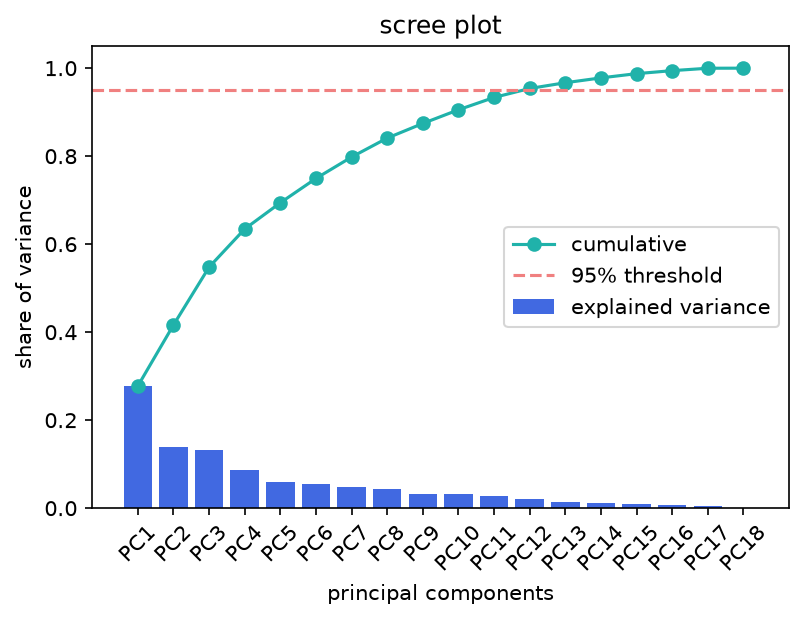
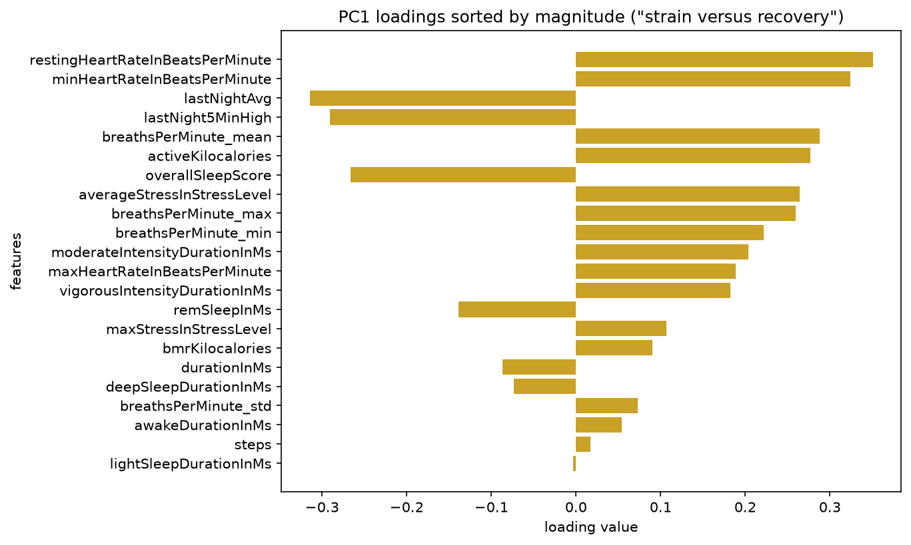
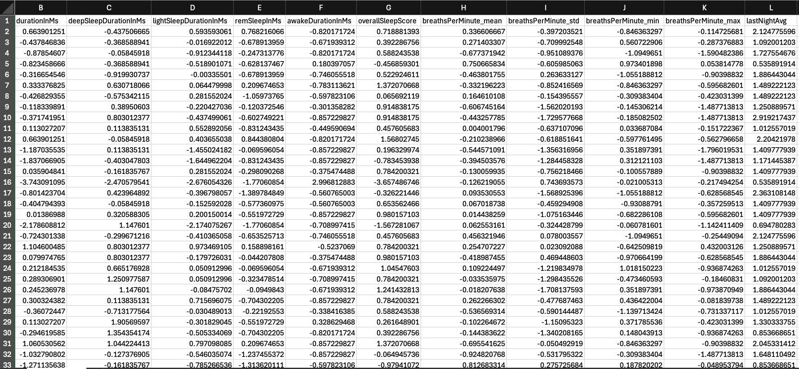
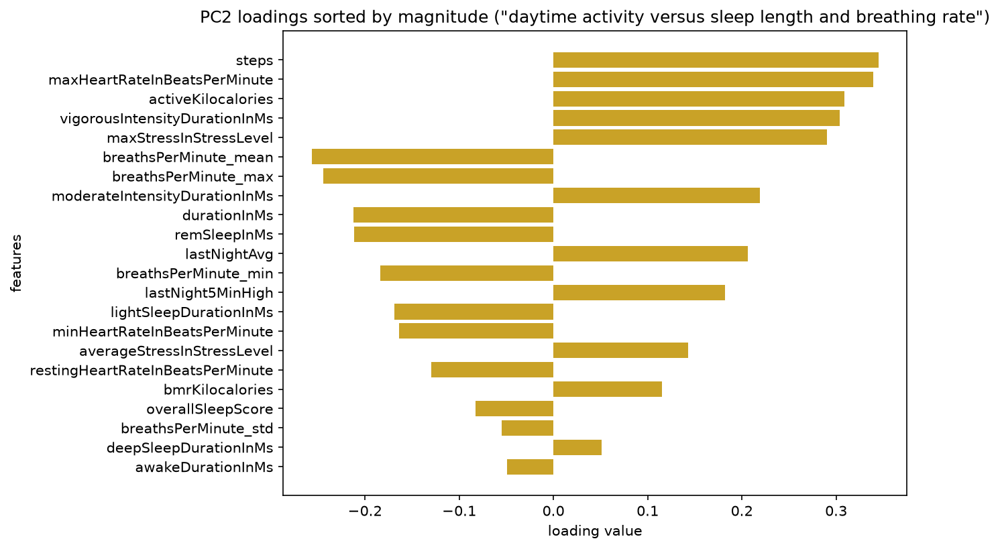
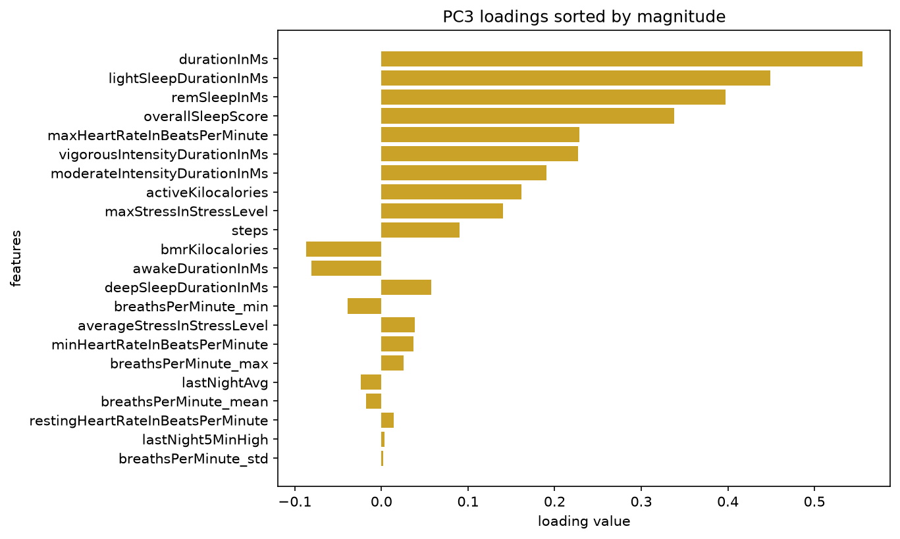

PCA is the process of reducing dimensions in a data set. It builds new axes, called principal components, as weighted combinations of the original columns, and correlated columns tend to share a component. PCA accomplishes this by combining highly correlated variables to produce vectors (eigenvectors) that explain the width and direction of stretch of the data. The eigenvalue of each one, taken from the covariance matrix of the data, is the amount of variance along that vector, and the components are ordered from largest to smallest. Loadings are the weights in each eigenvector. When they are multiplied against the standardized data matrix, the output is the scores. These are essentially a projection of each data point onto that principal component; that direction.
Dimensionality reduction means keeping only the first few principal components, the ones carrying the most variance, and discarding the rest. More data muddies the waters, so PCA looks to throw away what can afford to be thrown away to make the picture clearer. Each kept component is still built from all of the original columns. This simplifies the analysis and makes it possible to visualize the data in two or three dimensions.
The challenges of having 22 columns in this dataset are that only two or three dimensions can be drawn on a screen, redundant and noisy columns add to every distance calculation, and as more columns are added to the data matrix, the distances between points and their meaning become less informative. It is harder to make sense of the data. This follows the concept of the curse of dimensionality.


Using the same primary dataset as during clustering, the data was read in and scaled using StandardScaler. The identifier columns (participant, date, cohort) were left out, so only numeric columns were used. Unlike clustering, however, all 22 numeric columns were kept and analyzed, due to the primary purpose of PCA. K-means is distance based and therefore every feature gets a say in the sum of squared distance. Correlated pairs get counted twice. However, in PCA, the algorithm looks to find shared variation among columns and consolidates correlated features onto the same component. A sample of the standardized table is shown below, and the full table is linked.

PCA was carried out in Python, using pandas and NumPy for the data and the linear algebra check, scikit-learn for standardization and PCA, and Matplotlib for the plots.
How many components to keep
The scree plot levels off around PC5, and the first five components together carry about 65% of the variance. Nine components were chosen, the point where the cumulative curve crosses 80%. That keeps most of the variance (about 82%) while cutting the number of components from 22 to 9. The 13 components that remain average about 1.4% of the variance each, which does not add much to the overall picture, and may be noise. Reaching 95% would take 15 components.
Processing the scaled dataset with SVD and comparing those values with the eigenvalues of its covariance matrix revealed identical variance and eigenvalues. This confirms that the dataset was properly centered prior to modeling.
The last component carries almost no variance (about 0.01%). The column durationInMs is the sum of the deep, light, and REM sleep columns, so those four columns hold only three independent pieces of information, and PCA found that redundancy on its own.
What the components represent
A loading with a magnitude above about 0.21 (one divided by the square root of 22) was treated as larger than an average contribution. Each component is a pattern in the data, not a diagnosis.
PC1 (26.7% of the variance): strain versus recovery. Resting heart rate, minimum heart rate, the three breathing rates (mean, maximum, and minimum), active kilocalories, and average stress load positive. Both heart rate variability measures (lastNightAvg and lastNight5MinHigh) and the overall sleep score load negative.
| Strain side (positive loadings) | Recovery side (negative loadings) |
|---|---|
| Resting heart rate (0.35) | HRV, nightly average (-0.31) |
| Minimum heart rate (0.32) | HRV, 5-minute high (-0.29) |
| Breathing rate, mean (0.29) | Overall sleep score (-0.27) |
| Active kilocalories (0.28) | |
| Average stress (0.26) | |
| Breathing rate, max (0.26) | |
| Breathing rate, min (0.22) |
PC2 (13.5%): daytime activity versus sleep length and breathing rate. Steps, maximum heart rate, active kilocalories, vigorous and moderate intensity time, and maximum stress load positive. Mean and maximum breathing rate, total sleep duration, and REM sleep load negative, with duration and REM only just past the cutoff.
| Daytime activity (positive loadings) | Sleep length and breathing rate (negative loadings) |
|---|---|
| Steps (0.35) | Breathing rate, mean (-0.26) |
| Maximum heart rate (0.34) | Breathing rate, max (-0.24) |
| Active kilocalories (0.31) | Total sleep duration (-0.21) |
| Vigorous intensity time (0.30) | REM sleep (-0.21) |
| Maximum stress (0.29) | |
| Moderate intensity time (0.22) |

PC3 (10.8%): sleep duration, sleep stages, and activity. Total sleep duration, light sleep, REM sleep, and the overall sleep score carry the largest loadings, with maximum heart rate and vigorous intensity time only just past the cutoff. Deep sleep and awake time barely load, which is why this component is better described by the amount of sleep and its light and REM stages than by its quality.
| Sleep duration, stages, and activity (positive loadings) | Negative loadings |
|---|---|
| Total sleep duration (0.56) | None past the cutoff |
| Light sleep (0.45) | |
| REM sleep (0.40) | |
| Overall sleep score (0.34) | |
| Maximum heart rate (0.23) | |
| Vigorous intensity time (0.23) |

Looking at the scree plot, the top three principal components account for about 51% of the variance. They show patterns between daily activities and that night's sleep metrics. PC1 identifies a "strain versus recovery" pattern in which strain-side measures rise together (active kCals, average stress, resting and minimum heart rate, breaths per minute) while recovery measures fall (HRV, overall sleep score). PC2 identifies a "daytime activity versus sleep length and breathing rate" pattern in which more daytime activity (steps, max heart rate, active kCals, max stress, moderate and vigorous activity) tends to occur together with shorter sleep and lower breathing rates (mean and max breaths per minute, total sleep duration, REM duration). PC3 identifies a "sleep duration, sleep stages, and activity" pattern, with total sleep, light sleep, REM sleep, and the overall sleep score rising together, and max heart rate and vigorous intensity only slightly. Based on the scree plot, 9 principal components would be kept, as that surpasses the 80% threshold. The last 13 components contribute on average only about 1.4% explained variance each, so dropping them simplifies the model while possibly eliminating additional noise.
When looking at the K=2 clustering scatter plot, K-means split the data close to the middle, near where PC1 = 0. Since PC1 describes almost twice as much variance as PC2, it makes sense that the biggest difference between nights would be found along PC1. K-means backs up this notion by cutting in that direction as well. When comparing against the loading plot for PC1, that split describes strain versus recovery.